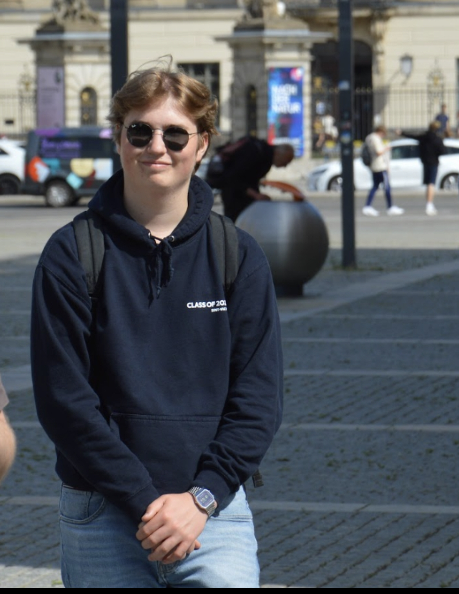

| Portfolio | cv | Werkervaringen | Hobby's | Contactgegevens |
|---|
Over mijWelkom op mijn portfolio website! Mijn naam is Pelkmans Arne en ik ben een student Systeem- en Netwerkbeheer. Hier vindt u een overzicht van mijn werk en projecten, evenals mijn vaardigheden en ervaringen op het gebied van IT-infrastructuur en netwerkbeheer. Ik heb een passie voor het oplossen van complexe technische problemen en het implementeren van efficiënte oplossingen die bedrijven helpen hun doelen te bereiken. Ik nodig u uit om mijn portfolio te verkennen en meer te weten te komen over mijn professionele reis in de wereld van IT. |
 |